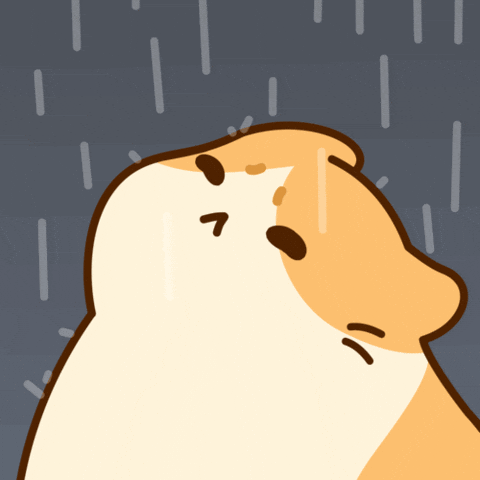

Buo kong pagtapat
Aking sinta na iniirog,
Lubos akong nag mamakaawa dahil ikaw ay nasaktan ko at nabigyan pa ng sagabal at sakuna
Mahalaga ka sakin, at alam na alam ko na din na mahalaga ako sayo ngunit hindi ko kinakaya ang distansya naten ngayon sa isa't isa, kaya muli akoy humihingi ng patawad sa nagawa ko sayo
Ikaw yung pinaka importanteng tao sa akin at takot din akong mawala ka, hindi ako sanay na ganito tayo ngayon kaya nanghihingi ako ngayon ng patawad, at aking isusumpa sa bato
na kahit ano ang mangyare, ikaw paden talaga ang bukod tanging tao na pipiliin ko sa araw araw, magalit man o masaya o kahit lungkot, kahit anong emosyon ang nararamdaman mo sa araw nayon
Pasensya na ulit dahil napa tampo ako nung araw nayon, at hindi ka inintindi pa ng mas maayos, at ang aking ibang mga nasabi ay nadala na sa pag iisip ng sakuna at dismaya kaya gusto ko talagang mas bumuti o mas mahusay sa tabi o tapat mo
At sana ay mapatawad mo ako sa aking mga nagawa at nasabi, at sana ay maging maayos na tayo muli, at sana ay maging masaya ka muli sa tabi ko
Hindi ako perpektong tao pero kaya kong mas maging mabuti o mahusay para sa iyo
(Grabe pag tagalog ko don ah, huwaw, patawarin mo napo ako please :c)
Nag-mamalasakit sa iyo,
Postcard Sender
